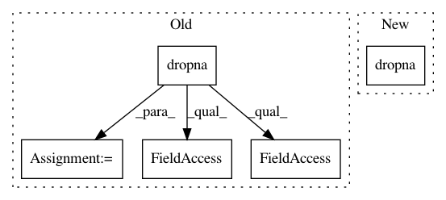

f3ed367fe1e586c73ac5fe39fef7b916d5987f2b,src/pudl/output/eia860.py,,plants_utils_eia860,#Any#Any#Any#,145
Before Change
]
out_df = out_df[cols_to_keep]
out_df = out_df.dropna()
out_df.plant_id_pudl = out_df.plant_id_pudl.astype(int)
out_df.utility_id_eia = out_df.utility_id_eia.astype(int)
out_df.utility_id_pudl = out_df.utility_id_pudl.astype(int)
return out_df
def generators_eia860(pudl_engine, start_date=None, end_date=None):
After Change
how="left", on=["report_date", "utility_id_eia"])
out_df = (
out_df.loc[:, ["report_date",
"plant_id_eia",
"plant_name_eia",
"plant_id_pudl",
In pattern: SUPERPATTERN
Frequency: 3
Non-data size: 5
Instances
Project Name: catalyst-cooperative/pudl
Commit Name: f3ed367fe1e586c73ac5fe39fef7b916d5987f2b
Time: 2020-02-12
Author: zane.selvans@catalyst.coop
File Name: src/pudl/output/eia860.py
Class Name:
Method Name: plants_utils_eia860
Project Name: catalyst-cooperative/pudl
Commit Name: 2069e3e1664cff1a4a6fb90dbefd398b8bfd3205
Time: 2018-09-30
Author: zane.selvans@catalyst.coop
File Name: pudl/transform/ferc1.py
Class Name:
Method Name: where_matches
Project Name: catalyst-cooperative/pudl
Commit Name: 5aaa63d7ecf85d341fec9b758d17f2bf4cde6042
Time: 2020-03-11
Author: zane.selvans@catalyst.coop
File Name: src/pudl/transform/ferc1.py
Class Name: FERCPlantClassifier
Method Name: predict